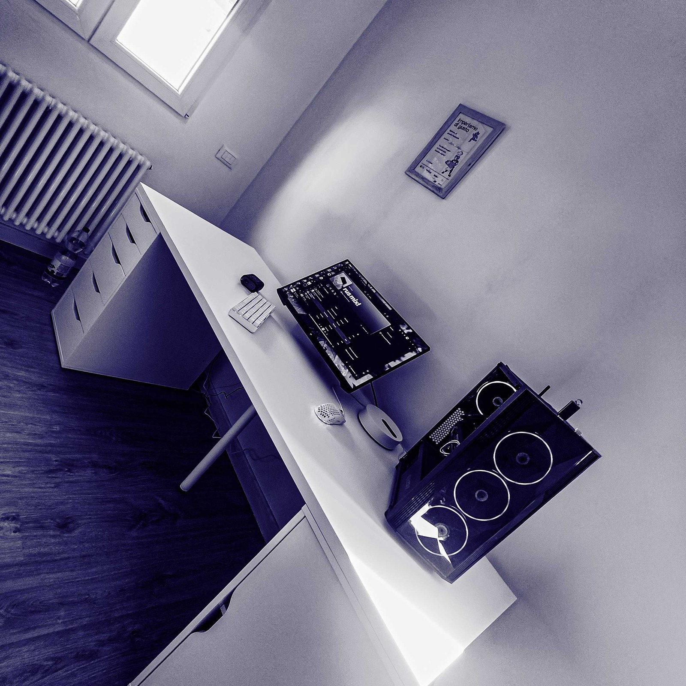

OpenBoost
Windows tuning with receipts. Every tweak saves its original value, previews the exact change, and gets benchmarked before you keep it.
Open OpenBoost
Axyy
I’m Axyy. I make Windows utilities that keep their promises: saved originals, visible changes, and a benchmark when it matters.
See the workTwo projects, built in public.
Windows tuning with receipts. Every tweak saves its original value, previews the exact change, and gets benchmarked before you keep it.
Open OpenBoostA music player that lets the song lead: synced lyrics, an equalizer, crossfade, a desktop widget and Discord presence.
I’m Axyy. I build small Windows tools, mostly for the parts of the OS that hide their settings.
I care about software that can explain itself: what it changes, what it saves, and how to put it back. If I can’t undo it, I probably shouldn’t ship it.
OpenBoost is that idea applied to tuning. OpenPlayer is the same instinct applied to music: fewer interruptions, more of the thing you opened.
When I’m not building, I’m at the desk in the photograph, usually testing a change I should have left alone.
Axyy Builder
I’m easiest to reach on GitHub. Open an issue, send a message, or just look around the code.
Say hello on GitHubThe repositories are public.